Modeling Seasonality
Seasonality represents the periodic variations in a times series. Residual error plots made this repetetive behavior more pronounced by the removal of linear trend from the time series, as was saw in previous section. There are different ways to visualize the season effect on temperature fluctuations. In the following plot, we useSeaborn's boxenplot() function to look at the seasonal mean and standard deviations of the seasonal residual error over the 1895-2019 period.
fig, ax = plt.subplots(2,1,figsize=(12,12),dpi=300, gridspec_kw={'height_ratios': [1,5]})
plt.subplots_adjust(left=0, bottom=0, right=1, top=1, wspace=0, hspace=0.2)
season_groupby = month_to_season_arr[state_df.index.month]
groupby_ = [(state_df.index.year), season_groupby]
linear_model_s = LinearRegression(normalize=True, fit_intercept=True)
y_data_s = state_df.groupby(groupby_).mean()
x_data_s = np.linspace(1895, 2019, len(y_data_s)).reshape(-1,1)
linear_model_s.fit(x_data_s, y_data_s)
last_many_data = 30*4 # past 30 years
a_s, b_s = linear_model_s.coef_[0], linear_model_s.intercept_ # f(x) = a.x + b (season)
y_pred_s = a_s*x_data_s + b_s
# Seasonal residual plot
ax[0].plot(x_data_s[-last_many_data:], (y_data_s-y_pred_s)[-last_many_data:], color='teal', linestyle='-.', label='residual error')
ax[0].set_xlabel('year', fontsize=14, labelpad=10)
ax[0].set_ylabel('residual', fontsize=14, labelpad=10)
ax[0].set_title(f'Residual error of the linear fit of the drift (using seasonal data) in temperature data of {state} from 1989-2019', fontsize=16);
ax[0].grid(False)
# Boxplot
residual_data = (y_data_s-y_pred_s)
residual_data.reset_index(inplace=True)
residual_data.columns = ['year', 'season', 'residual']
g = sns.boxenplot(x="season", y="residual",width=0.8,
palette="pastel", data=residual_data,
ax=ax[1], order=['Spring', 'Summer', 'Fall', 'Winter'])
ax[1].set_title(f'Seasonal boxplots of the residual error from a linear fit of the drift in temperature data of {state} from 1895-2019', fontsize=16);
g.set_xlabel(g.get_xlabel(), fontsize=14)
g.set_ylabel(g.get_ylabel(), fontsize=14)
for i in range(2):
plt.setp(ax[i].get_xticklabels(), fontsize=12)
plt.setp(ax[i].get_yticklabels(), fontsize=12);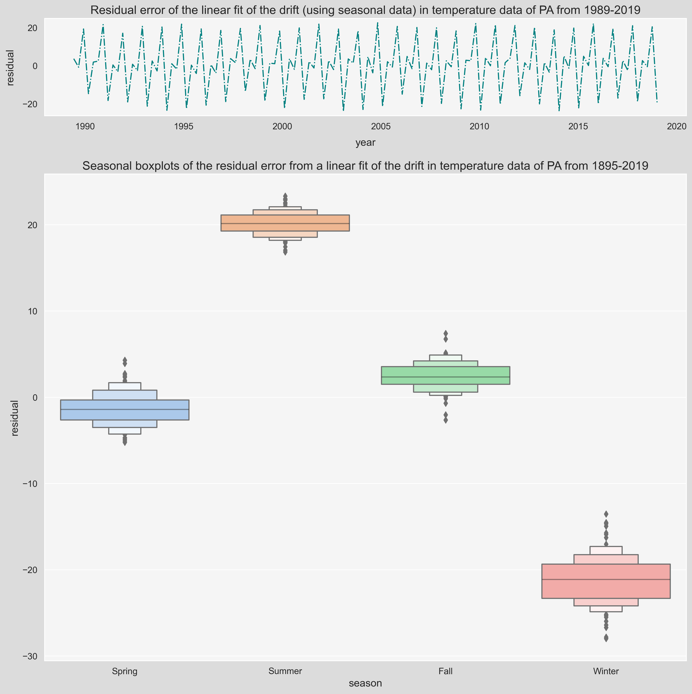
Notice that the residual fluctuations in Winter are higher than the other seasons. Temperature fluctuations occur in periods known to us. On a daily basis, around 3pm is usually the hottest time and on a Seasonal basis, Summer is the hottest season of the year. These frequencies are important in modeling the residual fluctuations, however, thanks to the power of math, we can find these frequency even if we don't know them. In the next part, we will talk about Fourier Analysis and more specifically Fast Fourier Transform (FFT), a powerful method to model identify these frequencies and use them to approximate the residuals.
Fourier Series
In short, Fourier analysis is a way of approximating a signal/function by a sum of sine and cosine terms, called the Fourier series. Fourier series is an expansion of a periodic function $T(t)$ of period $P$ using (theoretically) infinite sum of sines and cosines as:
$$ T(t) = \frac{a_0}{2} + \sum_{k=1}^{\infty}{a_k\cos\dfrac{2\pi kt}{P}} + \sum_{k=1}^{\infty}{b_k\sin\dfrac{2\pi kt}{P}} $$ For instance, if you think of a function $f(t)$ being $$ \sin(\frac{3\pi t}{2})+0.5. $$Reminder:
$\sin(x)$ has a period $2\pi$ because $2\pi$ is the smallest number for which $\sin(t+2\pi) = \sin(t)$, for all $t$. Similarly, the period of $\sin(\dfrac{3\pi t}{2})$ can be found by setting: $$ \frac{3\pi P}{2}=2\pi \ \rightarrow \ P=\dfrac{4}{3}. $$fig, ax = plt.subplots(1, 1, figsize=(12, 4), dpi=200)
ax.grid(False)
x_range = np.linspace(-4,4,1000)
ax.plot(x_range.reshape(-1,1), np.sin(3*np.pi*x_range/2)+0.5, label = r"$f(t) = \sin(\frac{3\pi t}{2})+0.5$")
ax.legend(bbox_to_anchor=(0.5,1,0,0),loc='lower center');
step=4/3
for i in np.arange(-4,4+0.1,4/3):
ax.axvline(i, c='r',ls=':');
func = lambda x, pos: f"${x:0.3f}$"
ax.xaxis.set_major_locator(ticker.MultipleLocator(step))
ax.xaxis.set_major_formatter(ticker.FuncFormatter(func))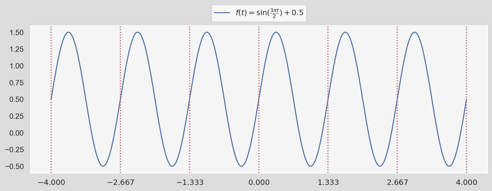
We can see that the function is being repeated every period $P$ which is shown by dotted, red vertical lines. In this case, we can write $f(t)$ as:
$$ f(t) = \frac{1}{2} + \sum_{k=1}^{1}{1\times\sin\bigg(\dfrac{2\pi \times 1\times t}{4/3}\bigg)} $$When we compare this form with the definition of Fourier series provided above, we have:
$$ a_0=\dfrac{1}{2}, \ a_k=0 \ (\text{for all }k>0) $$ $$ b_1=1, \ b_k=0 \ (\text{for all }k>1) $$ $$ P=\dfrac{4}{3} $$In fact, we don't need a whole bunch of $k$s to capture the function precisely; $k=1$ plus an offset $a_0=1$ does the job flawlessly! Now this was pretty obvious. What about a more complex function like:
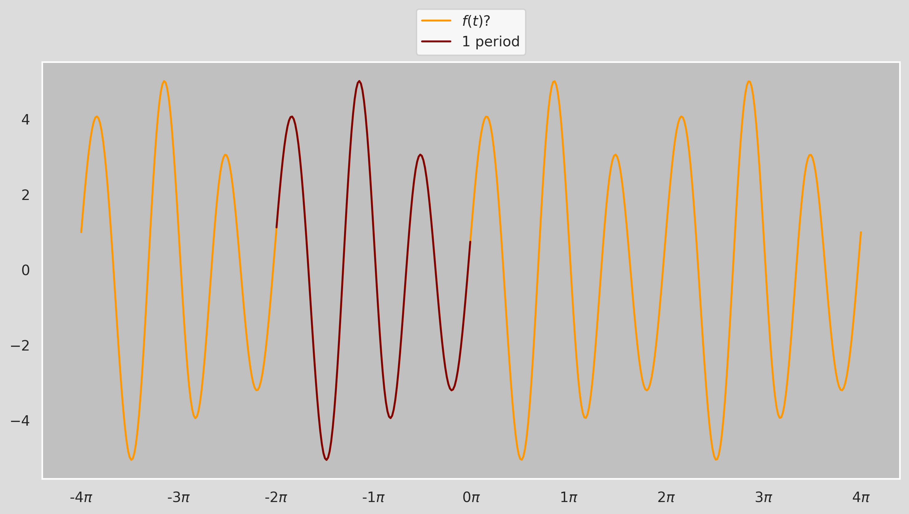
We can tell by looking at the figure that the period of $f(t)$ is about $2\pi$ but we can't really say more than that by just looking at it! Thankfully, the Fourier Coefficients $a_k$ and $b_k$ for a periodic function $f(t)$ can be calculated as:
$$ a_k = \dfrac{2}{P}\int_{P}f(t)\cdot\cos\big(\dfrac{2\pi}{P}kt\big)\,dt, \ \ \ b_k = \dfrac{2}{P}\int_{P}f(t)\cdot\sin\big(\dfrac{2\pi}{P}kt\big)\,dt $$Let's calculate the coefficients for $0\leq k \leq 10$ for the function above in one period $P:[0,2\pi]$, assuming that the fucntion is y (we will see shortly what the function actually is!)
import scipy.integrate as integrate
P = 2*np.pi
a_k = []
b_k = []
def integrand_cos(x,k):
return y(x)*np.cos(2*np.pi/P*k*x)
def integrand_sin(x,k):
return y(x)*np.sin(2*np.pi/P*k*x)
for k in range(11):
a_k.append(2/P*integrate.quad(lambda x: integrand_cos(x,k), 0, 2*np.pi)[0])
b_k.append(2/P*integrate.quad(lambda x: integrand_sin(x,k), 0, 2*np.pi)[0])
for i in range(11):
print(r"k={0}: a_{1}={2:.3f}, b_{3}={4:.3f}".format(i,i,a_k[i],i,b_k[i])) k=0: a_0=0.000, b_0=0.000
k=1: a_1=-0.000, b_1=0.000
k=2: a_2=1.000, b_2=0.000
k=3: a_3=-0.000, b_3=4.000
k=4: a_4=0.000, b_4=-0.500
k=5: a_5=0.000, b_5=-0.000
k=6: a_6=0.000, b_6=-0.000
k=7: a_7=-0.000, b_7=-0.000
k=8: a_8=-0.000, b_8=0.000
k=9: a_9=-0.000, b_9=0.000
k=10: a_10=0.000, b_10=0.000
The nonzero coefficients are: $$ a_2=1, \ b_3=4, \ b_4=-0.5 $$ which leads to the Fourier series for ${y}$ as: $$ y(t) = \cos(2t) + \sin(3t) -\dfrac{1}{2}\sin(4t) $$ which is exactly the function plotted in the previous Figure (the constant trend $\dfrac{a_0}{2}=2$ is removed):
import matplotlib.patches as patches
init_notebook_mode()
def col_to_hex(colmap, n, alpha=1):
"""
A simple function that given the named colormap and the number of colors needed, returns
a linearly spaced hex color codes belonging to that colormap
example:
num_colors = 5
colors = col_to_hex('coolwarm',num_colors)
print(colors)|
['#3a4cc0', '#83a6fbff', '#cdd9ebff', '#f6b79cff', '#d95947ff']
"""
# transparency = "%0.2X" % int(alpha*255) # map 0-1 to 0-255 then to hex
out = []
for i in range(n):
r,g,b,_ = plt.cm.get_cmap(colmap,n)(i)
out.append(f"#{int(r*255):02x}{int(g*255):02x}{int(b*255):02x}{int(alpha*255):02x}")
return out
def y(x):
return 4*np.sin(3*x) + np.cos(2*x) - 0.5*np.sin(4*x)
def y_components(x):
return 4*np.sin(3*x), np.cos(2*x), -0.5*np.sin(4*x)
sns.set(rc={'axes.facecolor':'silver', 'figure.facecolor':'gainsboro', 'legend.facecolor':'white'})
fig, ax = plt.subplots(1, 1, figsize=(12, 6),dpi=80)
ax.grid(False)
amplitudes = [4, 1, 0.5, 0]
names = [r"$y_1=4\sin(3t)$", r"$y_2=\cos(2t)$",r"$y_3=-\frac{1}{2}\sin(4t)$",r"$y=y_1+y_2+y_3$"]
colors = col_to_hex('jet', 5)
num_divs = 500
x_range = np.linspace(-4*np.pi,4*np.pi,num_divs)
y_components = y_components(x_range)
step=np.pi
rectangle_width = 0.1
for j in range(4):
if j==3:
y_ = list(y(x_range))
else:
y_ = list(y_components[j])
ax.add_patch(patches.Rectangle((-(rectangle_width+0.05)*(j+1)-4*np.pi-0.05, 0),
rectangle_width, amplitudes[j], edgecolor = colors[j], facecolor = colors[j], fill=True
))
ax.plot(x_range[:125], y_[:125], color=colors[j], linestyle=':', zorder=-j)
ax.plot(x_range[125:], y_[125:], color=colors[j], label=names[j])
func = lambda x, pos: f"{x/step:.0f}$\pi$"
ax.xaxis.set_major_locator(ticker.MultipleLocator(step))
ax.xaxis.set_major_formatter(ticker.FuncFormatter(func))
ax.legend(bbox_to_anchor=(0.5,1,0,0),loc='lower center');- $y=y_1+y_2+y_3$, i.e., Fourier Series expressed the function $y$ as a sum of three periodic functions $y_1$, $y_2$, and $y_3$.
- The oscillation with $\omega=3$ has the biggest impact on $y$ whereas the green sine wave with $\omega=4$ having a low impact, but it's amplitude is much smaller. This is manifested in the corresponding Fourier coefficients for each component.
- Note that the Fourier coefficients are the amplitudes of the sinusoidal components (shown with the rectangles)
- Period of $y$ is the Least Common Multiple (LCM) of the periods of its sinusoidal components, i.e., $2\pi = \text{LCM}(\pi,\dfrac{2\pi}{3},\dfrac{\pi}{2})$
We can think of Fourier Series as transforming a function in time domain, e.g., $y(t)$, to Frequency Domain where it is expressed using Amplitudes and Frequencies/Periods. This is the idea behind Fourier Transform. It can be written as:
$$ F(\omega)=\int_{-\infty}^{\infty}f(t)\,e^{-i\omega t}\,dt $$We can say $f(t)$ lives in the time domain, and $F(\omega)$ lives in the frequency domain. Similar to Fourier series, the Inverse Fourier Transform can be used to obtain $f(t)$ from $F(\omega)$:
$$ f(t)=\dfrac{1}{2\pi}\int_{-\infty}^{\infty}F(\omega)\,e^{i\omega t}\,d\omega $$The Fourier transform can be viewed as the limit of the Fourier series of a function with the period approaches to $\infty$, so the limits of integration change from one period $P$ to $(−\infty,\infty)$. While a periodic function can (provably) be expressed as a "discrete superposition" of exponentials, namely, a "Summation", a non-periodic function can not! It only admits a "continuous superposition, namely, an "Integral". Note that instead of using sines and cosines, we can use Euler's formula to serve the same purpose: $$ e^{i\omega t}=\cos(\omega t)+i\sin(\omega t) $$ Exponential functions have the virtue that they are eigenfunctions for differentiation, i.e., differentiation just multiplies them by their exponent multiplier ($i \omega$ in this example): $$ \dfrac{d}{dt}e^{i\omega t}=i\omega\,e^{i\omega t} $$ which makes them very convenient for numerical operations.
Fast Fourier Transform (FFT) and Discrete Fourier Transform (DFT)
So far we only talked about continuous functions, however, temporal data in many practical applicationsis not continuous. For instance in our example, temperature measurement are available in monthly periods. If the original input function/variable contains equally spaced observations (for example, equal time intervals), then the Fourier transform is known as a discrete Fourier transform (DFT).
Discrete Fourier transform (DFT) converts a finite sequence of equally-spaced samples of a function into a same-length sequence of a complex-valued, equally-spaced function of frequency. For a real function/observation $x_n$ where $0\leq n \leq N-1$, the discrete fourier transform (DFT) $X_k$ is defined as: $$ X_k = \sum_{n=0}^{N-1}{x_n e^{-i\,2\pi{kn/N}}} = \sum_{n=0}^{N-1}{x_n[\cos(2\pi{kn/N}) -i \,\sin(2\pi{kn/N})]} $$ where $N$ is total number of samples and $k$ is the frequency in which the response is computed ($0\leq k \leq N-1$). Similar to Inverse Fourier Transform, $x_n$ can be retrieved from $X_k$ using Inverse Discrete Fourier Transform as: $$ x_n = \frac{1}{N} \sum_{k=0}^{N-1} X_k e^{i\,2\pi kn/N} $$Positive and negative frequencies
I always had trouble making sense of negative frequencies so I hope this helps! From Eauler's Identity we know:
$$ \cos(\theta) = \dfrac{e^{i\,\theta} + e^{-i\,\theta}}{2} \\ \sin(\theta) = \dfrac{e^{i\,\theta} - e^{-i\,\theta}}{2i} $$This means see that both sine and cosine (and hence all real sinusoids) consist of a sum of equal and opposite circular motion. It might make it easier to think of $\sin(\theta)$ function being made from equal contributions from an anti-clockwise rotating vector $e^{i\theta}$ and a clockwise rotating vector $e^{-i\theta}$ in figure below.
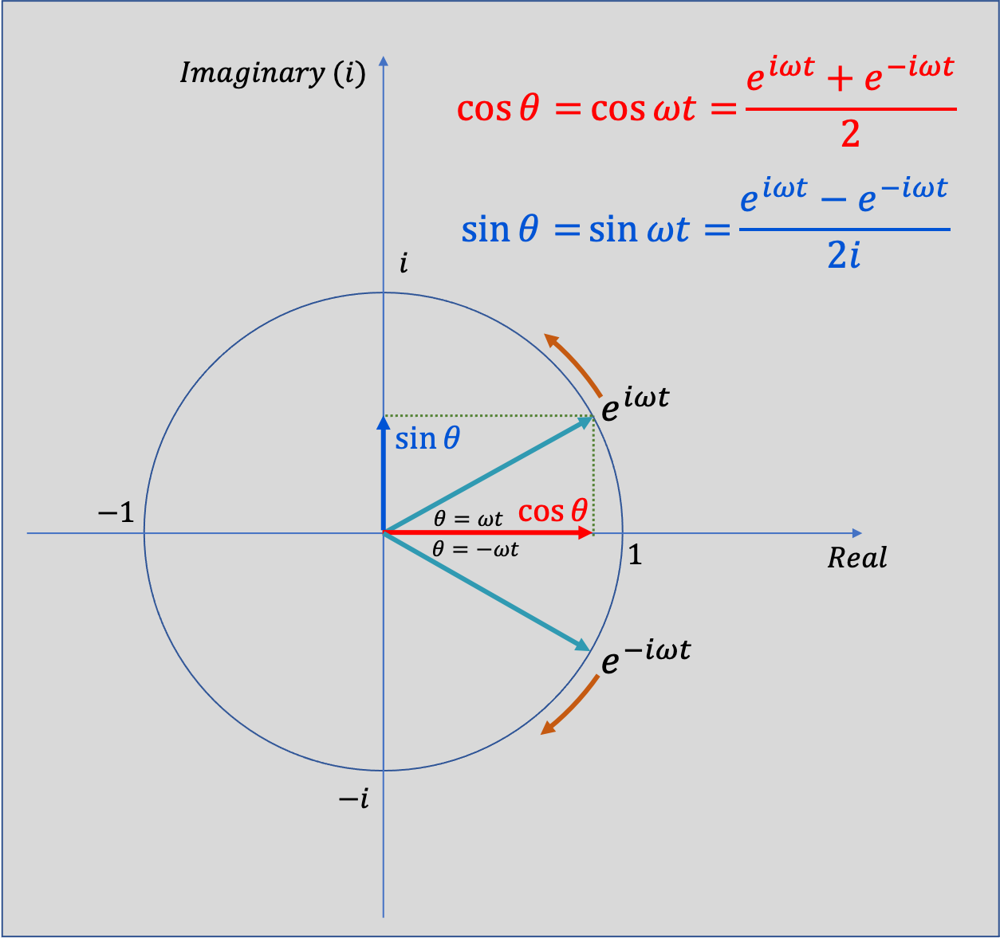
import matplotlib as mpl
import seaborn as sns
from mpl_toolkits.mplot3d import axes3d, Axes3D
import numpy as np
from matplotlib import cm
import matplotlib.pyplot as plt
sns.set(rc={'axes.facecolor':'white', 'figure.facecolor':'white', 'legend.facecolor':'white'})
mpl.rcParams['legend.fontsize'] = 10
fig = plt.figure(figsize=(10,10), dpi=90)
ax = fig.gca(projection='3d')
ax.grid(False)
theta = np.linspace(-2 * np.pi, 2 * np.pi, 100)
# z = np.linspace(-2, 2, 100)
r = 1
x = r * np.sin(theta)
y = r * np.cos(theta)
# ax.plot(x, y, z, label='parametric curve')
ax.plot(x, y, theta, label=r"$e^{i \omega t}$", color='lightgray',zorder=10)
ax.plot(x, 1*np.ones(100), theta, label=r"$\sin(\omega t)$",color="#0C55D5")
ax.plot(-1*np.ones(100), y, theta, label=r"$\cos(\omega t)$",color="#FF0700")
ax.plot(x, y, theta[0]*np.ones(100), alpha=0.2)
ax.set_xlabel('$\sin(\omega t)$', color="#0C55D5")
ax.set_xlim(-1, 1)
ax.set_ylabel('$\cos(\omega t)$', color="#FF0700")
ax.set_ylim(-1, 1)
ax.set_zlabel(r'$\omega t$')
ax.set_zlim(theta[0], theta[-1])
ax.set_xticks([-1,0,1])
ax.set_yticks([-1,0,1])
step=np.pi
func = lambda x, pos: f"{x/step:.0f}$\pi$"
ax.zaxis.set_major_locator(ticker.MultipleLocator(step))
ax.zaxis.set_major_formatter(ticker.FuncFormatter(func))
ax.legend(bbox_to_anchor=(1,1,0,0),loc='upper right');
plt.savefig('fourier_3d.png')
plt.show()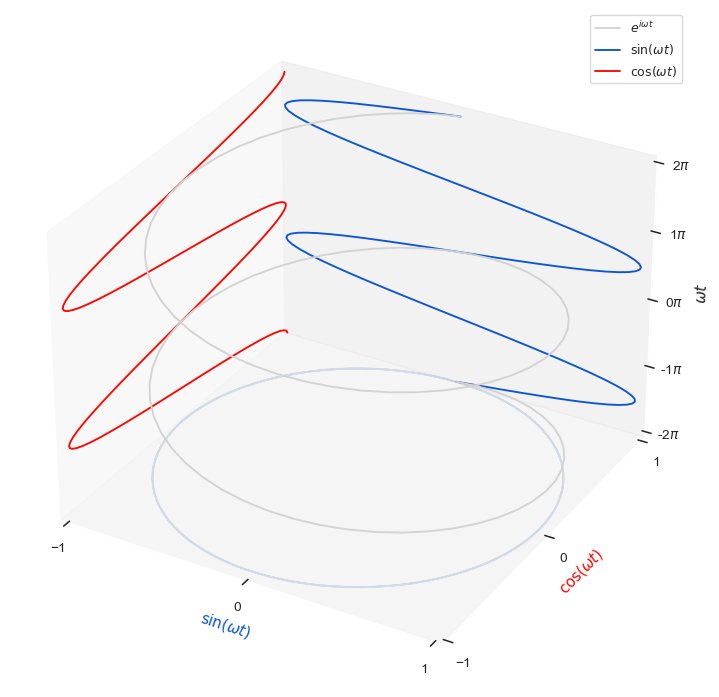
As a result, $X_k$ contain contain both positive and negative frequency terms. We can see that $X_0=\sum \limits_{n=0}^{N-1}x_n$. If we subtract $x_n$ by its mean before the transformation then $X_0=0$. For the case where $x_n$ is real-valued like our case, the DFT output $X_k$ for positive frequencies is the conjugate of the values $X_k$ for negative frequencies. This means that the frequency spectrum will be symmetric. numpy.fft module provides a straightforward way to compute DFT using FFT. Before demonstrating the application of FFT, let's introduce some terminology that we will use.
- Sampling: When we deal with time series data, the data could've been gathered every day, week, month etc. The process of recording data at constant time units is called sampling.
- Sampling Rate($\mathbf{f_s}$) denotes the number of data samples recorded per unit of time, usually seconds. If the time unit is in seconds the unit of sampling rate would be Hertz ($Hz$). For instance if we sample a variable twice a minute, the sampling rate is $\dfrac{1}{30}\,Hz$
# sampling rate
fs = 10
# total_time (sec)
total_time = 2
sampling_times = np.arange(0,total_time,1/fs)
sampling_times_continuous = np.arange(0,total_time,1/fs/100)
N = len(sampling_times)
n = np.arange(N)
T = N/fs
# calculate the frequencies
freq = n/T
def frequency_labels(freq, fs=fs):
ticks = freq
labels = [f"{x:.1f}" for x in list(freq[freq>fs/2]) + list(-freq[freq<fs/2][::-1][:-1])]
if len(labels)==len(ticks)-1:
labels.insert(len(labels)//2+1, r"$\pm${:.1f}".format(freq[freq>=fs/2][0]))
return labels
def y(x, cos_amplitude=0, sin_amplitude=0, frequency=1):
return cos_amplitude*np.cos(2*np.pi*frequency*x) + sin_amplitude*np.sin(2*np.pi*frequency*x)
# time domain samples
x_n_continuous = y(sampling_times_continuous,sin_amplitude=5,frequency=1) \
+ y(sampling_times_continuous,sin_amplitude=1,frequency=1.5) \
- y(sampling_times_continuous,sin_amplitude=4,frequency=2.5) \
+ y(sampling_times_continuous,sin_amplitude=10,frequency=3.5)
# time domain samples
x_n = y(sampling_times,sin_amplitude=5,frequency=1) \
+ y(sampling_times,sin_amplitude=1,frequency=1.5) \
- y(sampling_times,sin_amplitude=4,frequency=2.5) \
+ y(sampling_times,sin_amplitude=10,frequency=3.5)
X_k = np.abs(np.fft.fft(x_n-x_n.mean()))/(N/2)
# sns.set_style("white")
sns.set(rc={'axes.facecolor':'whitesmoke', 'figure.facecolor':'gainsboro', 'legend.facecolor':'white'})
fig, ax = plt.subplots(2, 1, figsize=(12, 12), sharex=False, dpi=80)
plt.subplots_adjust(left=0, bottom=0, right=1, top=1, wspace=0, hspace=0.25)
colors = col_to_hex('tab10', 8)
ax[0].scatter(sampling_times, x_n, marker='o', s=100, label='data samples')
ax[0].plot(sampling_times_continuous, x_n_continuous, 'r:', linewidth=3, label='reconstructed f')
# individual frequencies
ax[0].plot(sampling_times_continuous, y(sampling_times_continuous,sin_amplitude=5,frequency=1),
c=colors[0], linestyle='--',label=r'$5\sin(2\pi t)$', alpha=0.5)
ax[0].plot(sampling_times_continuous, y(sampling_times_continuous,sin_amplitude=1,frequency=1.5),
c=colors[1], linestyle='--',label=r'$\sin(3 \pi t)$', alpha=0.5)
ax[0].plot(sampling_times_continuous, -y(sampling_times_continuous,sin_amplitude=4,frequency=2.5),
c=colors[2], linestyle='--',label=r'$-4\sin(5 \pi t)$', alpha=0.5)
ax[0].plot(sampling_times_continuous, y(sampling_times_continuous,sin_amplitude=10,frequency=3.5),
c=colors[3], linestyle='--',label=r'$10\sin(7 \pi t)$', alpha=0.5)
ax[0].set_xlabel(r'$t$', labelpad=5, fontsize=20)
ax[0].set_ylabel(r'$x_n$', labelpad=5, fontsize=20)
ax[0].set_title('Original data(time domain)', fontsize=24, y=1.02)
ax[1].stem(freq, X_k, 'r')
ax[1].set_xticks(freq)
ax[1].set_xticklabels(frequency_labels(freq))
ax[1].scatter(fs/2,0,marker='x', s=100, label=r'$f_{\mathrm{Nyquist}}$')
ax[1].set_xlabel(r'$f\,(Hz)$', labelpad=5, fontsize=20)
ax[1].set_ylabel(r'$\vert X_k \vert$', labelpad=5, fontsize=20)
ax[1].set_title('FFT (frequency domain)', fontsize=24, y=1.02)
for i in range(2):
plt.setp(ax[i].get_xticklabels(), fontsize=14)
plt.setp(ax[i].get_yticklabels(), fontsize=14)
ax[i].legend(bbox_to_anchor=(1,1,0,0), loc='upper left', fontsize=18)
plt.show()
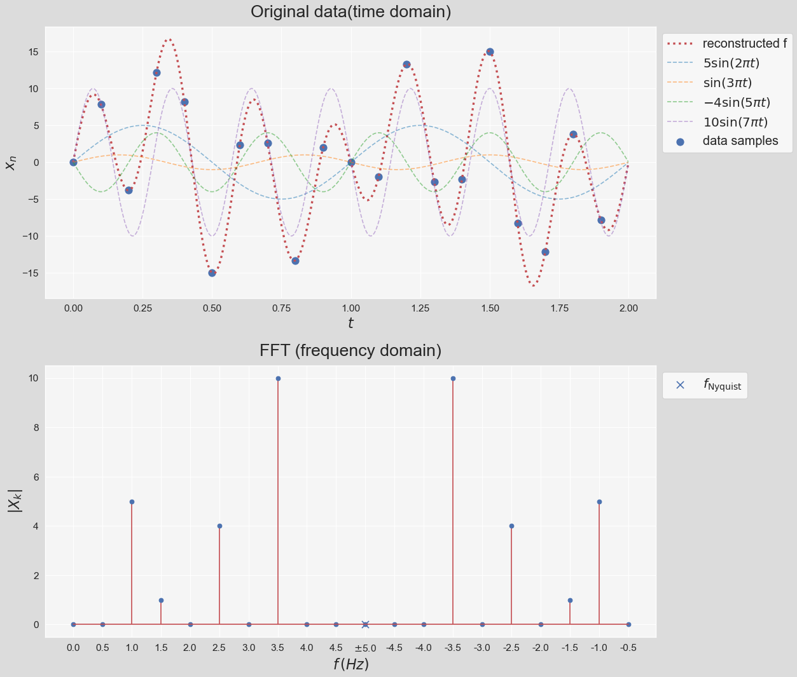
Looks great! There are some important notes worth noting about this figure:
- We subtracted the mean before computing the FFT. In this example it doesn't make a difference because $\tilde{x_n}=0$. In general though, not subtracting leads to a large zero-frequency component because of what we mentioned previously, $X_0=\sum \limits_{n=0}^{N-1}x_n$.
- Note that FFT has no knowledge of any of the curves plotted in the top figure. We only feed the data 20 samples shown with blue circles to FFT. The curves are shown to demonstrate that FFT can recunstruct the original data that the samples have been drawn from.
- Note that the amiplitude corresponding to each frequency is exactly recovered when we divide $X_k$ by the number of samples, however, because each curve is constructed by the sum two equal contributions from a positive and negative frequency, the amplitude is equal to sum of the two symmetric frequencies.
- Note that the frequency response exhibits symmetry (called "folding") around the frequency that is called the Nyquist frequency. Nyquist frequency is equal to half the sampling rate: $$ f_{\text{Nyquist}}=\dfrac{f_s}{2} $$
- According to the Nyquist criterion, the sampling frequency, $f_s$, must be at least twice the maximum frequency component in the signal; otherwise, a phenomenon known as aliasing occurs (See here). In other words, the time domain data sampled at a sampling rate $f_s$ can be fully reconstructed if it contains only frequency components below half that sampling rate. Therefore, FFT's highest output frequency is half the sampling rate.
- We can think about in the context of the bottom figure as this: Reducing the sampling rate causes the highest negative frequency ($-3.5\,Hz$ in this example) getting closer and closer its conjugate ($f=3.5\,Hz$) until they touch, which is when the aliasing happens.
# sampling rates
fs = 12
# total_time (sec)
total_time = 2
sampling_times = np.arange(0,total_time,1/fs)
sampling_times_continuous = np.arange(0,total_time,1/fs/100)
N = len(sampling_times)
n = np.arange(N)
T = N/fs
# calculate the frequencies
freq = n/T
# time domain samples
x_n_continuous = y(sampling_times_continuous,sin_amplitude=2,frequency=5)
x_n = y(sampling_times,sin_amplitude=2,frequency=5)
# Frequency response
X_k = np.abs(np.fft.fft(x_n-x_n.mean()))/(N/2)
# Plot
sns.set(rc={'axes.facecolor':'whitesmoke', 'figure.facecolor':'gainsboro', 'legend.facecolor':'white'})
fig, ax = plt.subplots(2, 1, figsize=(12, 12), sharex=False, dpi=80)
plt.subplots_adjust(left=0, bottom=0, right=1, top=1, wspace=0, hspace=0.25)
colors = col_to_hex('tab10', 8)
ax[0].scatter(sampling_times, x_n, marker='o', s=100, label='data samples')
ax[0].plot(sampling_times_continuous, x_n_continuous, 'r:', linewidth=3, label='continuous f')
ax[0].set_xlabel(r'$t$', labelpad=5, fontsize=20)
ax[0].set_ylabel(r'$x_n$', labelpad=5, fontsize=20)
ax[0].set_title('Original data(time domain)', fontsize=24, y=1.02)
ax[1].stem(freq, X_k, 'r')
ax[1].scatter(fs/2,0,marker='x', s=100, label=r'$f_{\mathrm{Nyquist}}$')
ax[1].set_xlabel(r'$f\,(Hz)$', labelpad=5, fontsize=20)
ax[1].set_ylabel(r'$\vert X_k \vert$', labelpad=5, fontsize=20)
ax[1].set_title('FFT (frequency domain)', fontsize=24, y=1.02)
for i in range(2):
plt.setp(ax[i].get_xticklabels(), fontsize=14)
plt.setp(ax[i].get_yticklabels(), fontsize=14)
ax[i].legend(bbox_to_anchor=(1,1,0,0), loc='upper left', fontsize=18)
plt.show()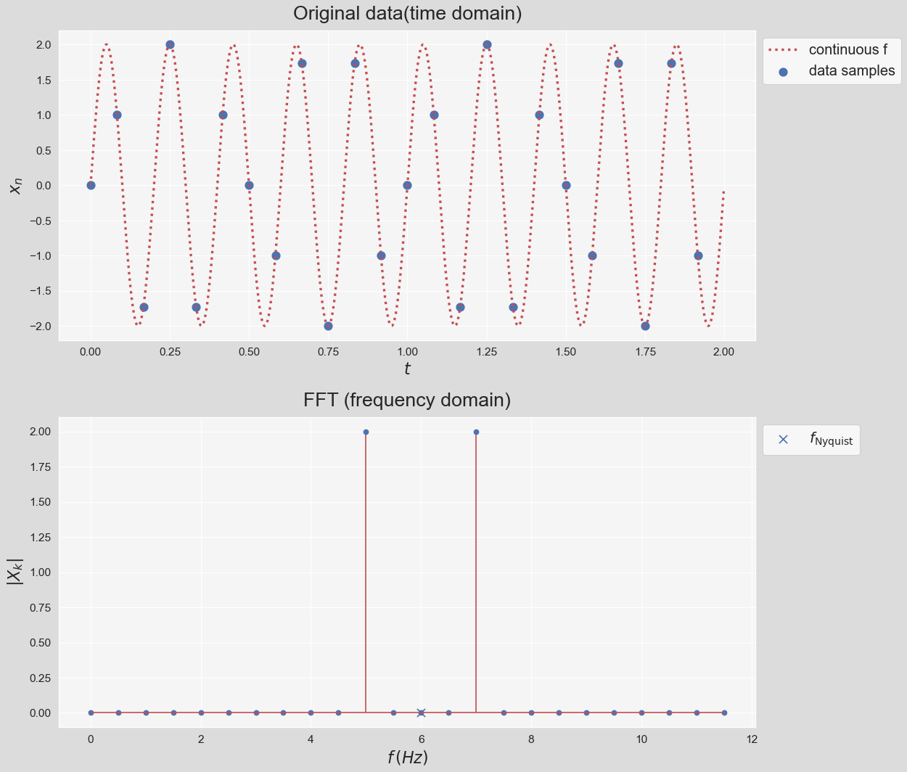
Ok! Now that we are done with the math-heavy part, we can examine how we can apply Fourier analysis on the seasonal component of the temperature data. After we subtracted the trend from the original data using linear regression, we were left out with the residual data:
residual_data = (y_data_m-y_pred_m)
residual_data.index.set_names(['year','month'], inplace=True)
residual_data.reset_index(inplace=True)
residual_data.columns = ['year','month','residual']
residual_data.head()| year | month | residual | |
|---|---|---|---|
| 0 | 1895 | 1 | -26.679 |
| 1 | 1895 | 2 | -30.361 |
| 2 | 1895 | 3 | -16.022 |
| 3 | 1895 | 4 | -0.574 |
| 4 | 1895 | 5 | 11.378 |
residual_data.residual.plot();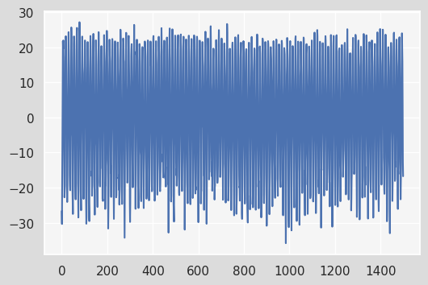
fft = np.fft.fft((residual_data.residual - residual_data.residual.mean()).values)
plt.plot(np.abs(fft))
plt.title("FFT of temperature data")
plt.xlabel('# Cycles in full window of data (~125 years)');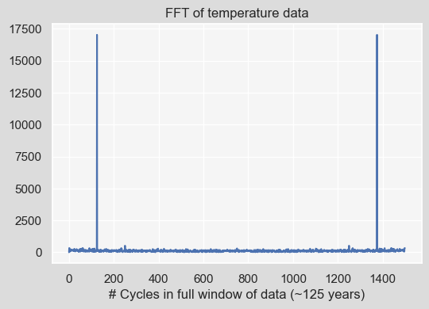
We can take a look at the dominant frequencies that contribute the most by sorting the resulting Fourier Transform (fft). Note that we only focus on the first half of the response and also normalize that response by the number of data points in the first half of the response. Here, we print the 10 most dominant frequencies:
dominant_freqs_10 = np.argsort((np.abs(fft)[:len(fft)//2]))[-10:][::-1]
dominant_freqs_10array([125, 250, 1, 2, 62, 91, 233, 59, 235, 114])
The X_k_10 variable shows the amplitude corresponsing to each of these frequencies:
X_k_10 = np.abs(fft)[dominant_freqs_10]/(len(fft)//2)
X_k_10 array([22.71 , 0.694, 0.448, 0.443, 0.441, 0.438, 0.425, 0.405,
0.4 , 0.394])
Nice! So what this means is that the most dominant frequency is something that has been repeated 125 times in our time series which is a year! Said differently, what is happening every
$$ \dfrac{\mathrm{len(fft)}}{\mathrm{125}}=\dfrac{\mathrm{1500}}{\mathrm{125}}=\text{12 months} = \text{1 year} $$Note that our unit of time here is a month. Next, what has been repeated 250 times?
$$ \dfrac{\mathrm{1500}}{\mathrm{250}}=\text{6 months} $$
Every 6 months, i.e., half a year, which denotes the second dominant frequency is due to hot and cold seasons variations ((spring + summer) months and (fall + winter) months). the third and fourth frequencies are affiliated with the entire 125 years and 62.5 years periods, respectively. Next, we see the biannual or biennial effects, corresponding to every two years:
The phase angle $\phi=\tan^{-1}\bigg(\dfrac{\mathrm{Im}(X_k)}{\mathrm{Re}(X_k)}\bigg)$ can easily be obtained using numpy.angle():
np.angle(fft[dominant_freqs_10], deg=True) array([ 174.552, -177.222, -40.071, 77.718, 18.964, -2.654,
-105.005, -163.641, -160.028, -4.573])
fig, ax = plt.subplots(3, 1, figsize=(12, 12), sharex=False, dpi=80)
freq_ranges = [np.arange(125-5,125+5+1), np.arange(250-5,250+5+1), np.arange(0,10)]
labels = [r"$\dfrac{{{:.0f}}}{{{:.0f}}}={{{:.1f}}}$".format(125,x,y)+' years' \
for (_,(x,y)) in enumerate([[125, 1], [250,0.5], [1,125]])]
max_indices = [5, 5, 1]
data = np.abs(fft/(len(fft)//2))
plt.subplots_adjust(left=0, bottom=0, right=1, top=1, wspace=0, hspace=0.25)
for i, range_ in enumerate(freq_ranges):
ax[i].stem(range_, data[range_])#, label=labels[i]
markers, stems, bases = ax[i].stem([range_[max_indices[i]]], [data[range_][max_indices[i]]], label=labels[i])
markers.set_markerfacecolor('red')
markers.set_markeredgecolor('red')
stems.set_edgecolor('red')
ax[i].set_ylabel('Amplitude', fontsize=18, labelpad=10)
ax[i].legend(loc='upper right')
plt.suptitle('Three dominant frequencies', y=1.05, fontsize=24)
plt.xlabel('Number of occurences in 125 years ($f$)', fontsize=18)
plt.show()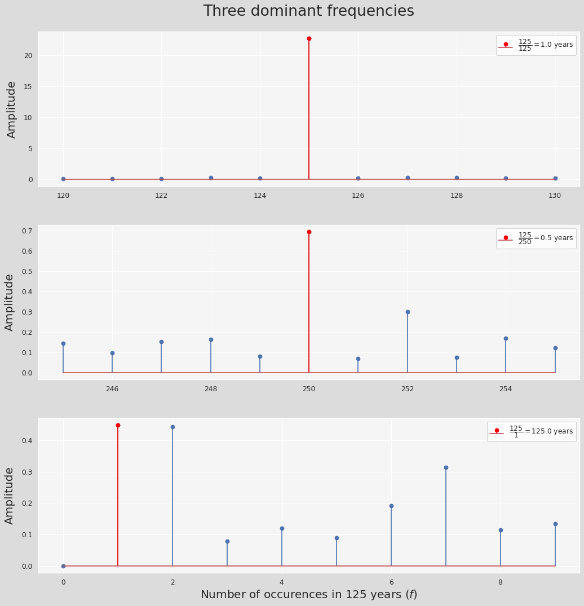
We can define a simple function to approximate the time series residual using the fft data:
temp_data = state_df.groupby([(state_df.index.year),(state_df.index.month)]).mean()
def model_trend(ts_data):
x_range = np.arange(0, len(ts_data)).reshape(-1,1)
linReg_model = LinearRegression(normalize=True, fit_intercept=True)
linReg_model.fit(x_range, ts_data)
a_, b_ = linReg_model.coef_[0][0], linReg_model.intercept_[0]
ts_model_trend = a_*x_range + b_
return ts_model_trend
def model_seasonal(ts_data, n_dominant_modes=10):
ts_model_trend = model_trend(ts_data)
residual = np.ravel((ts_data - ts_model_trend).values)
fft = np.fft.fft(residual - residual.mean())
dominant_freqs = np.argsort((np.abs(fft)[:len(fft)//2]))[-n_dominant_modes:][::-1]
phase_angles = np.angle(fft[dominant_freqs])
amplitudes = np.abs(fft[dominant_freqs]) / (len(fft)/2)
ts_model_seasonal = np.zeros((len(fft),1))
t = 2 * np.pi * np.arange(0, len(fft)) / len(fft)
for i,freq in enumerate(dominant_freqs):
ts_model_seasonal += amplitudes[i] * np.cos(freq*t + phase_angles[i]).reshape(-1,1)
return ts_model_seasonal + ts_model_trendfig, ax = plt.subplots(3, 1, figsize=(8,8), sharex=True)
plt.subplots_adjust(left=0, bottom=0, right=1, top=0.92, wspace=0, hspace=0.1)
state = 'AL'
state_df = climate_df[climate_df['state']==state]
state_df.set_index('timestamp', inplace=True)
temp_data = state_df.groupby([(state_df.index.year),(state_df.index.month)]).mean()
num_modes = [1, 10, 50]
first_year = 1895
last_year = 2019
start_year = 2000
end_year = last_year
num_years = end_year-start_year+1
start_index = (start_year-first_year)*12
end_index = start_index + num_years*12
for i, n_modes in enumerate(num_modes):
ts_pred = model_seasonal(temp_data, n_dominant_modes=n_modes)
err = (temp_data-ts_pred).values[start_index:end_index]
mae = np.abs(err).mean()
lab = f'prediction using first {n_modes}\n' + f'modes (MAE = {mae:.1f}$^\circ$F)'
ax[i].plot(temp_data.values[start_index:end_index], color='r', label='real data')
ax[i].plot(ts_pred[start_index:end_index], color='b', label=lab)
ax[i].legend(bbox_to_anchor=(1,1.05,0,0), loc='upper left')
func = lambda x, pos: f"{start_year + x/12:.0f}"
ax[-1].xaxis.set_major_locator(ticker.MultipleLocator(24))
ax[-1].xaxis.set_major_formatter(ticker.FuncFormatter(func))
plt.setp(ax[-1].get_xticklabels(), fontsize=14, rotation=45)
plt.xlabel('year', fontsize=18, labelpad=10)
plt.suptitle(f'Seasonal model predictions of {state} temperatures from {start_year} to {end_year}', fontsize=18);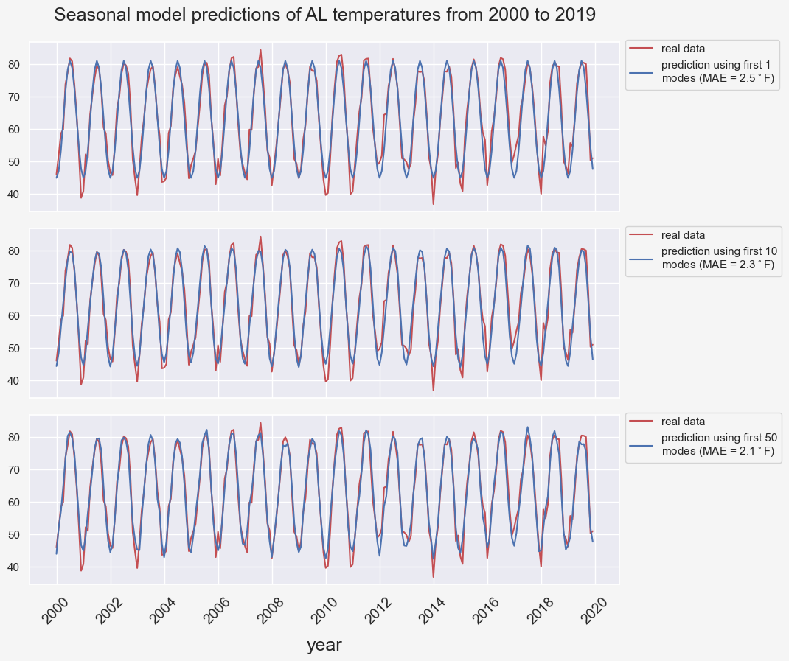
Intuitively, including more frequency modes in our predictor leads to a more accurate prediction.
seasonal_model_residual = (temp_data-ts_pred).iloc[start_index:end_index,:]
seasonal_model_residual.index.set_names(['year','month'], inplace=True)
seasonal_model_residual.reset_index(inplace=True)
seasonal_model_residual.columns = ['year','month','error']
seasonal_model_residual['MAE'] = seasonal_model_residual['error'].apply(lambda x: abs(x))
seasonal_model_residual['month_name'] = seasonal_model_residual['month'].apply(lambda x:months[x-1])
months = [month for month in month_name][1:]
fig, axes = plt.subplots(2, 1, figsize=(12, 8), sharex=True, dpi=100)
plt.subplots_adjust(left=0, bottom=0, right=1, top=0.95, wspace=0, hspace=0.02)
g = sns.boxplot(x="month_name", y="error",
palette="tab20", data=seasonal_model_residual,
order=months, showmeans=True, ax=axes[0])
g.set_xlabel('')
g.set_ylabel(r'Seasonal model raw error ($^\circ F$)', fontsize=16, labelpad=10)
plt.setp(g.get_xticklabels(), fontsize=14, rotation=45, ha='center');
g = sns.boxplot(x="month_name", y="MAE",
palette="tab20", data=seasonal_model_residual,
order=months, showmeans=True,ax=axes[1])
g.set_xlabel(r'month', fontsize=16, labelpad=10)
g.set_ylabel(r'Seasonal model MAE ($^\circ F$)', fontsize=16, labelpad=10)
plt.setp(g.get_xticklabels(), fontsize=14, rotation=45, ha='center')
plt.suptitle('Raw and Mean Absolute Error (MAE)', fontsize=22, y=1.0);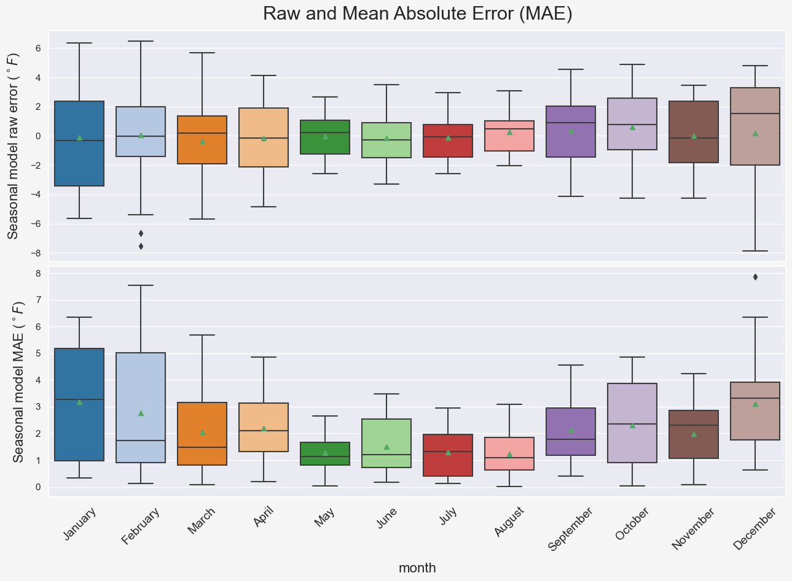
Notice that the warmer months are associated with lower errors which makes sense because as we saw previously, temperature fluctuations in cold months are more pronounced compared to the warm months. Hence, the model predictions for the cold seasons are prone to larger errors. Also, comparing the two subplots in Figure BLAH shows that looking at the mean absolute errors might be a better way of interpreting the model performance. For instance, comparing the model performance for different months using the mean raw error (green rectangles in the top subplot) is not a good idea due to cancellation of errors. This is why the mean absolute error is a common measure of forecast error in time series analysis (ref).
So far, we have only tested the model performance on the data that the mdoel is trained on without any kind of validation on the future data that the model has not seen. This is our main concern in the next part of the project. In addition, we will investigate how does
- the number of data points used in training, i.e. the number of years
- the number of modes,
Modeling noise
We can further improve our seasonal mdoels' temperature predictions by modeling the models' residual error, AKA noise. Noise mainfests the temperature patterns that can not be predicted using the seasonal model. One of the most common way of modeling noise in the context of time series is using autocorrelation functions.
Autocorrelation
Before proceeding further and for the sake of clarification, let's remind everyone of some important statistical definitions: Covariance of two samples $X$ and $Y$ from a population of size $N$ is defined as: $$ \mathrm{Cov}(X,Y) = \frac{1}{N-1} \sum_{i=1}^N (X_i - \bar{X})(Y_i - \bar{Y}) $$ The reason the sample covariance has $N-1$ in the denominator rather than $N$ is basically that the population mean $E(X)$ unknown and is replaced by the sample mean $\bar {X}$. Similarly, Variance of a sample $X$ or Unbiased sample variance is equal to $\mathrm{Cov}(X,X)$ or $$ {\sigma^2}(X) = \frac{1}{N-1} \sum_{i=1}^N (X_i - \bar{X})^2 $$ $$ \rho(X,Y) = \frac{\mathrm{Cov}(X,Y)}{\sigma(X)\sigma(Y)} = \frac {\sum\limits_{i=1}^{n}(X_{i}-{\bar {X}})(Y_{i}-{\bar {Y}})}{{\sqrt {\sum\limits_{i=1}^{n}(X_{i}-{\bar {X}})^{2}}}{\sqrt {\sum\limits_{i=1}^{n}(Y_{i}-{\bar {Y}})^{2}}}} $$ Correlation between two vectors $X$ and $Y$ reveals the similarity/dissimilarity of them:
from scipy.stats import pearsonr
num_points = 20
multipliers= [1,0,-1]
labels = ['positive', 'no', 'negative']
cols = col_to_hex('coolwarm',3)
X = np.arange(num_points)
amplitude = 2
noise = amplitude*scipy.stats.uniform(-1, 2).rvs(num_points)
fig, axes = plt.subplots(1, 3, figsize=(14, 4), dpi=200)
plt.subplots_adjust(wspace=0.25)
for i,mp in enumerate(multipliers):
axes[i].grid(False)
Y = mp*X + noise
pearson_corr = pearsonr(X, Y)
axes[i].scatter(X,Y,s=20,label=f'{labels[i]} correlation ($\\rho=${pearson_corr[0]:.2f})', c=cols[i])
axes[i].set_xlabel('$X$', fontsize=16, labelpad=5)
axes[i].set_ylabel('$Y$', fontsize=16)
axes[i].plot([-5,25], [-5*mp,25*mp], 'r:')
axes[i].set_xlim([-5,25])
axes[i].legend(bbox_to_anchor=(0.5,1,0,0), loc='lower center')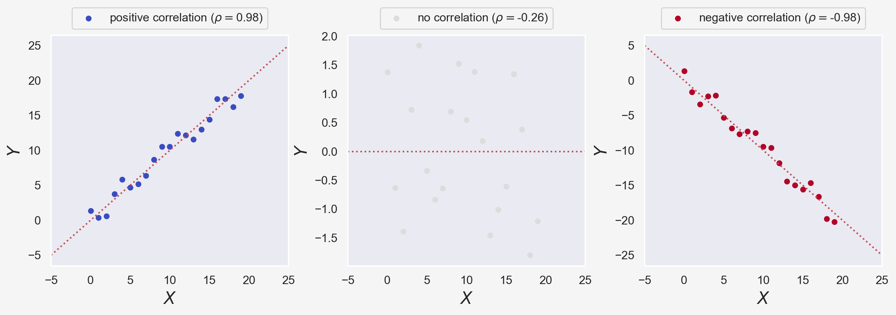
In the figure above, $\rho$ is the Pearson correlation coefficient, measuring the relationship between two variables $X$ and $Y$. We used scipy.stats's pearsonr method to calculate $\rho$. $\rho$ spans $[-1,1]$ range where $\rho=0$ implies no correlation, and +1 and -1 imply perfect correlation and anti-correlation, respectively.
In time series analysis, autocorrelation is the Pearson correlation between values of the process as a function of the two times or of the time lag. For example, think of a time series data $X_t$ with $n=172$ temperatures hourly recorded as $X_t=[x_1,x_2,\dots,x_n]$. So $X_t$ represents temperatures for 7 days. The data actually shows the hourly temperatures for Manchester, NH from 07/03/2021-19:53:00 to 07/10//2021-18:53:00 (obtained from here)
X_t = [58, 58, 58, 57, 57, 57, 57, 57, 56, 56, 56, 56, 57, 56, 57, 57, 58, 59, 61, 62, 63, 66, 68, 70,
71, 69, 70, 68, 66, 63, 60, 58, 58, 58, 58, 58, 58, 58, 59, 59, 60, 62, 64, 68, 70, 72, 74, 76,
77, 78, 78, 77, 75, 73, 71, 70, 69, 69, 69, 68, 69, 68, 68, 68, 70, 72, 73, 74, 79, 83, 86, 87,
89, 88, 86, 85, 82, 80, 78, 77, 75, 74, 72, 72, 73, 73, 71, 72, 76, 80, 82, 84, 86, 86, 88, 87,
87, 87, 84, 82, 82, 78, 75, 72, 71, 70, 69, 70, 69, 69, 64, 63, 63, 64, 65, 67, 67, 70, 70, 68,
65, 64, 63, 63, 62, 61, 61, 61, 61, 61, 60, 60, 61, 61, 61, 61, 61, 62, 62, 63, 63, 64, 65, 66,
68, 72, 73, 75, 76, 76, 73, 72, 72, 72, 72, 71, 69, 69, 68, 67, 66, 66, 64, 66, 68, 73, 74, 72]
X_t = np.array(X_t)
fig, ax = plt.subplots(1, 1, figsize=(12, 4), dpi=100)
ax.plot(X_t)
func = lambda x, pos: f"{x/24:.0f}"
ax.xaxis.set_major_locator(ticker.MultipleLocator(24))
ax.xaxis.set_major_formatter(ticker.FuncFormatter(func))
ax.set_xlabel('day')
ax.set_ylabel('T($^\circ F$)');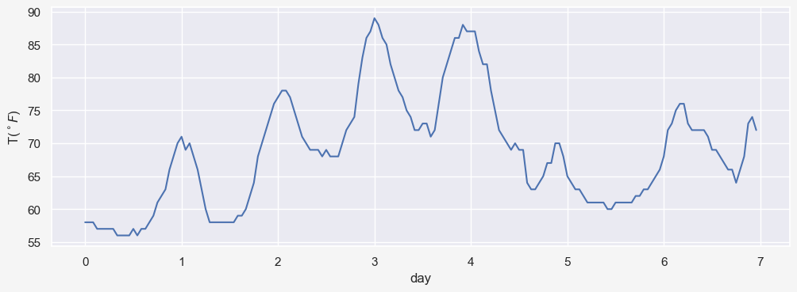
We know that the correlation of $X_t$ wiht itself gives $\rho(X_t,X_t)=1$.
print(f'{pearsonr(X_t, X_t)[0]:.1f}')1.0
One would expect to see a strong correlation between $X_t$ and $X_{t-1}=[x_0,x_1,\dots,x_{n-1}]$ since a temperature $x_i$ is not expected to be significantly different from $x_{i-1}$.
print(f'{pearsonr(X_t[1:], X_t[:-1])[0]:.2f}')0.98
Similarly, you would expect to see a relatively strong correlation if we compare $X_t$ and $X_{t-2}$:
print(f'{pearsonr(X_t[2:], X_t[:-2])[0]:.2f}')0.94
Autocorrelation function generalizes this idea by calculating $\rho(X_t,X_{t-k})$ for $0\leq k \leq N-1$ where $N$ is the length of time series. We can demonstrate this by defining a simple function acf as:
def autocorr(x,lags):
'''non partial autocorrelation function'''
mean=np.mean(x)
var=np.var(x)
xp=x-mean
corr=[1. if l==0 else np.sum(xp[l:]*xp[:-l])/len(x)/var for l in lags]
return np.array(corr)
fig, ax = plt.subplots(1, 1, figsize=(12, 4), dpi=100)
ax.plot(acf(X_t))
ax.plot(autocorr2(X_t, np.arange(0,len(X_t)-2)),'r:')
func = lambda x, pos: f"{x:.0f}"
ax.xaxis.set_major_locator(ticker.MultipleLocator(24))
ax.xaxis.set_major_formatter(ticker.FuncFormatter(func))
ax.set_xlabel('Lag (hours)')
ax.set_ylabel(r'$\rho$');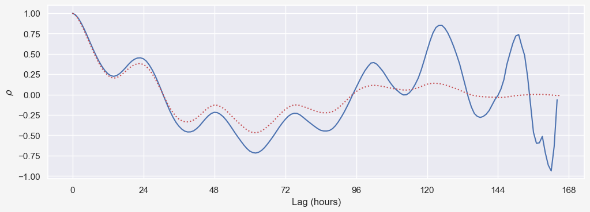
def corr(x,y):
'''numpy.corrcoef, partial'''
corr=[1. if l==0 else np.corrcoef(x[l:],x[:-l])[0][1] for l in lags]
return np.array(corr)
from pandas.plotting import autocorrelation_plot
f = plt.figure()
# autocorrelation_plot(temp_data['tempf'])
plt.plot(acf((temp_data['tempf']-temp_data['tempf'].mean()).values),'r:')
plt.plot(autocorr1((temp_data['tempf']-temp_data['tempf'].mean()).values, np.arange(0,1498)),'b:')
plt.plot(autocorr2((temp_data['tempf']-temp_data['tempf'].mean()).values, np.arange(0,1498)),'g:')
plt.xlabel('Lag (months)')
# plt.axvline(365*24, color = 'green');.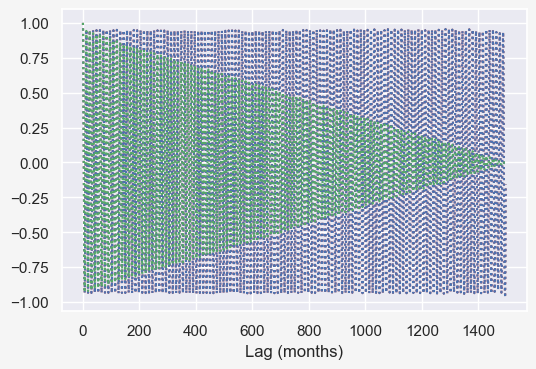
(temp_data['tempf']-temp_data['tempf'].mean()).valuesarray([-20.26 , -25.894, -8.825, ..., 4.578, -12.609, -11.931])
fig, axes = plt.subplots(2, 1, figsize=(12, 8), sharex=True, dpi=100)
plt.subplots_adjust(left=0, bottom=0, right=1, top=0.95, wspace=0, hspace=0.02)
axes[0].plot(seasonal_model_residual['error'])
axes[1].plot(seasonal_model_residual['MAE'])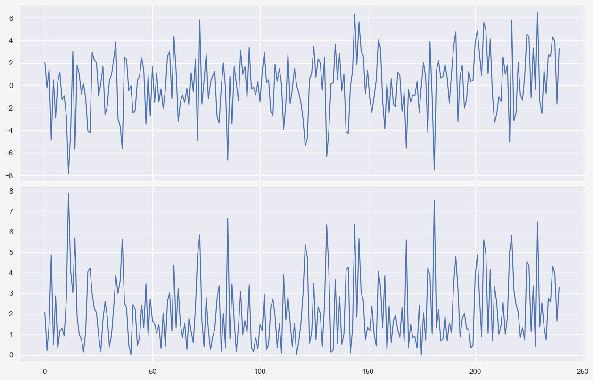
seasonal_model_residual['error'].mean()0.04747016383969698
fft_noise = np.fft.fft(seasonal_model_residual['error']-seasonal_model_residual['error'].mean())
plt.stem(np.abs(fft_noise))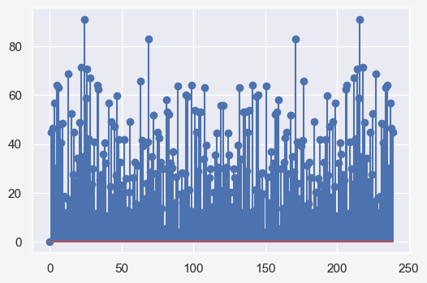
temp_data['tempf'] timestamp timestamp
1895 1 42.718
2 37.084
3 54.152
4 63.169
5 69.307
...
2019 8 80.390
9 80.012
10 67.555
11 50.369
12 51.046
Name: tempf, Length: 1500, dtype: float64
from pandas.plotting import autocorrelation_plot
f = plt.figure()
ax = autocorrelation_plot(temp_data['tempf'])
plt.xlabel('Lag (months)')
# plt.axvline(365*24, color = 'green');.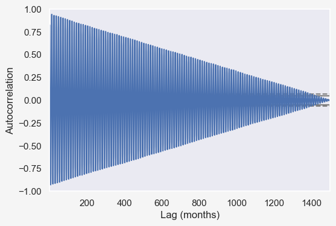
fig, axes = plt.subplots(2, 1, figsize=(12, 8), sharex=True, dpi=100)
plt.subplots_adjust(left=0, bottom=0, right=1, top=0.95, wspace=0, hspace=0.02)
seasonal = model_seasonal(temp_data, n_dominant_modes=5)
autocorrelation_plot((temp_data-seasonal)[-20*12:], ax=axes[0])
autocorrelation_plot(np.abs((temp_data-seasonal))[-20*12:], ax=axes[1])
ax.set_ylim([-0.3,0.3])
plt.xlabel('Lag (months)')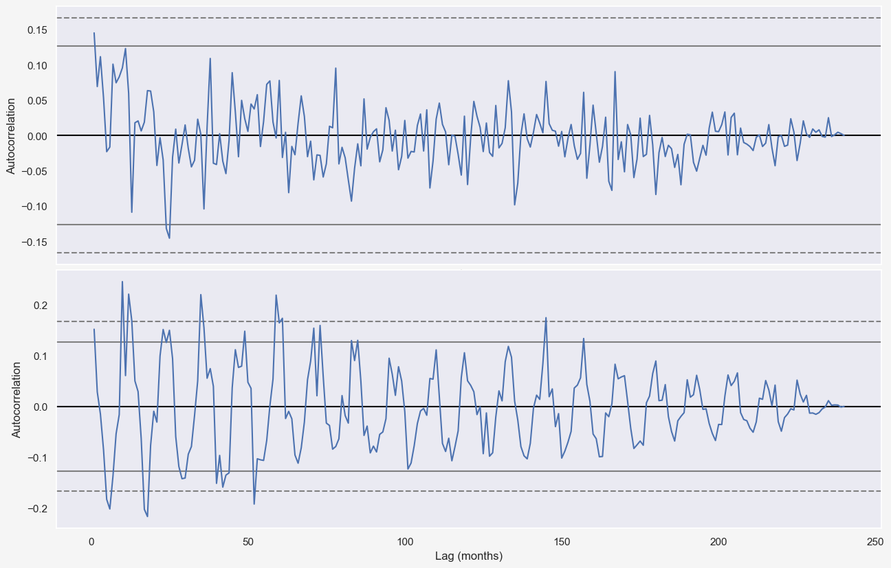
Cross-validation of the full model
As mentioned previously, cross validation for time series data is different from other machine learning algorithms. In this project, I use sliding-window validation technique which is similar to train-test split where the temporal order of observations is preserved. Assuming a time series data of size $N$, sliding-window method uses $N_{tr}$ data points $x_{(i-N_{tr})},x_{(i-N_{tr}+1)},...,x_{(i-1)},x_{(i)}$ to predict $N_{ts}$ data points $x_{(i+1)},...,x_{(i+N_{ts}-1)},x_{(i+N_{ts})}$. In the following, I define a simple function that incorporated the trend and seasonal model to make predictions for future times, given the past data.
def model_full(ts_data, n_dominant_modes=10, n_pred=24):
"""
Given the time series data, predicts the temperature for the next n_pred months
"""
# train range
N = len(ts_data)
t_range_tr = np.arange(0, N).reshape(-1,1)
linReg_model = LinearRegression(normalize=True, fit_intercept=True)
linReg_model.fit(t_range_tr, ts_data)
a_, b_ = linReg_model.coef_[0][0], linReg_model.intercept_[0]
# detrend
residual = np.ravel((ts_data - a_*t_range_tr + b_).values)
fft = np.fft.fft(residual - residual.mean())
dominant_freqs = np.argsort((np.abs(fft)[:N//2]))[-n_dominant_modes:][::-1]
phase_angles = np.angle(fft[dominant_freqs])
amplitudes = np.abs(fft[dominant_freqs]) / (N/2)
ts_model_full = np.zeros((N+n_pred, 1))
# train+valid range
t_range_val = np.arange(0, N+n_pred)
for i,freq in enumerate(dominant_freqs):
ts_model_full += amplitudes[i]*np.cos(2*np.pi*freq*t_range_val/N + phase_angles[i]).reshape(-1,1)
return ts_model_full + (a_*t_range_val + b_).reshape(-1,1)We can now use this funtion for the purpose of cross validation. I test the full model to predict temperatures from 2010-2019 while assessing the influence of multiple parameters:
- Number of training data, i.e., how much do we know from past.
- Number of frequency modes included
How far back in time works better?
fig, ax = plt.subplots(6, 1, figsize=(12, 18), dpi=200)
plt.subplots_adjust(left=0, bottom=0, right=1, top=1, wspace=0, hspace=0.35)
state = 'AL'
state_df = climate_df[climate_df['state']==state]
state_df.set_index('timestamp', inplace=True)
temp_data = state_df.groupby([(state_df.index.year),(state_df.index.month)]).mean()
num_modes = [25]
num_years_tr = [10, 30, 50]
n_pred = 12 * 10 # 10 years (2010-2019)
t_range = np.arange(0, len(temp_data)).reshape(-1,1)
xticklabel_steps = [25*12, # every 25-years, 1 xticklabel
12, # every year, 1 xticklabel
]
axes_colors = ["#fff6f3","#fffcf4","#f3f6f8"]
xticklabel_start_years = [1895, 2010]
sns.set(rc={'figure.facecolor':"whitesmoke",'axes.edgecolor':"gray"})
for i, n_modes in enumerate(num_modes):
for j, n_years in enumerate(num_years_tr):
ts_data_tr = temp_data.iloc[-n_years*12-n_pred : -n_pred, :]
ts_data_val = temp_data.iloc[-n_pred:, :]
ts_pred = model_full(ts_data_tr, n_dominant_modes=n_modes, n_pred=n_pred)
ts_pred_tr = ts_pred[:-n_pred]
ts_pred_val = ts_pred[-n_pred:]
mae_tr = np.abs(ts_data_tr - ts_pred_tr).values.mean()
mae_val = np.abs(ts_data_val - ts_pred_val).values.mean()
ax[j*2+1].plot(t_range[-n_pred:], ts_pred_val, color='orange')
ax[j*2+1].plot(t_range[-n_pred:], ts_data_val, color='xkcd:crimson', linestyle=':')
ax[j*2].plot(t_range[-n_pred:], ts_data_val, color='orange', label=f'val pred (MAE={mae_val:.2f}$^\circ\!F$)')
ax[j*2].plot(t_range[-n_years*12-n_pred:-n_pred], ts_data_tr, color='blue', label=f'tr pred (MAE={mae_tr:.2f}$^\circ\!F$)')
ax[j*2].plot(t_range, temp_data.values, color='xkcd:crimson', linestyle=':', label='real data')
for k,(start_year,step) in enumerate(zip(xticklabel_start_years,xticklabel_steps)):
func = lambda x, pos: f"{start_year-115+x/12:.0f}"
ax[j*2+k].xaxis.set_major_locator(ticker.MultipleLocator(step))
ax[j*2+k].xaxis.set_major_formatter(ticker.FuncFormatter(func))
ax[j*2+k].set_facecolor(axes_colors[j])
ax[j*2+k].grid(False)
ax[j*2].legend(bbox_to_anchor=(1,-0.18,0,0), loc='center left', fontsize=10, facecolor=axes_colors[j])
ax[j*2].set_title(f'Train and validation data - Model trained using past {n_years} years', fontsize=16, y=1.02)
plt.show()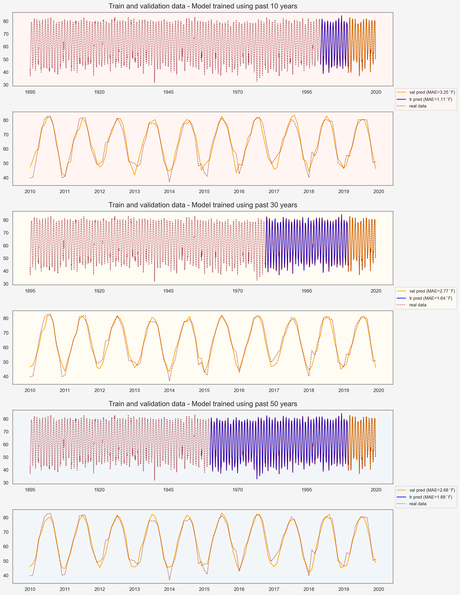
Assessing the influence of num_modes and train_size
fig, ax = plt.subplots(3, 3, figsize=(12, 12), dpi=100)
plt.subplots_adjust(left=0, bottom=0, right=1, top=1, wspace=0.15, hspace=0.4)
state = 'AL'
state_df = climate_df[climate_df['state']==state]
state_df.set_index('timestamp', inplace=True)
temp_data = state_df.groupby([(state_df.index.year),(state_df.index.month)]).mean()
num_modes = [1, 5, 10]
num_years_tr = [10, 30, 50]
n_pred = 12 * 10 # 10 years (2010-2019)
t_range = np.arange(0, len(temp_data)).reshape(-1,1)
xticklabel_step = 5*12 # every 5 years, 1 xticklabel
axes_colors = col_to_hex('Spectral', len(num_modes)*len(num_years_tr), 0.08)
xticklabel_start_year = 2010
sns.set(rc={'figure.facecolor':"white",'axes.edgecolor':"gray",'legend.facecolor':"whitesmoke"})
for i, n_modes in enumerate(num_modes):
for j, n_years in enumerate(num_years_tr):
ts_data_tr = temp_data.iloc[-n_years*12-n_pred : -n_pred, :]
ts_data_val = temp_data.iloc[-n_pred:, :]
ts_pred = model_full(ts_data_tr, n_dominant_modes=n_modes, n_pred=n_pred)
ts_pred_tr = ts_pred[:-n_pred]
ts_pred_val = ts_pred[-n_pred:]
mae_tr = np.abs(ts_data_tr - ts_pred_tr).values.mean()
mae_val = np.abs(ts_data_val - ts_pred_val).values.mean()
ax[i][j].plot(t_range[-n_pred:], ts_pred_val,
color='orange',
label= f'tr pred (MAE={mae_tr:.2f}$^\circ\!F$) - ' \
+ f'val pred (MAE={mae_val:.2f}$^\circ\!F$)'
)
ax[i][j].plot(t_range[-n_pred:], ts_data_val, color='xkcd:crimson', linestyle=':', label='real data')
func = lambda x, pos: f"{xticklabel_start_year-115+x/12:.0f}"
ax[i][j].xaxis.set_major_locator(ticker.MultipleLocator(xticklabel_step))
ax[i][j].xaxis.set_major_formatter(ticker.FuncFormatter(func))
ax[i][j].set_facecolor(axes_colors[i*len(num_years_tr)+j])
ax[i][j].grid(False)
ax[i][j].legend(bbox_to_anchor=(0.5,1,0,0), loc='lower center', fontsize=10)
ax[i][j].set_title(f'Using {n_years} years and {n_modes} #modes', fontsize=16, y=1.18)
plt.suptitle(f'Temperature predictions of {state} for 2010-2019 period using different n_modes and n_years',
fontsize=22, y=1.12)
plt.show()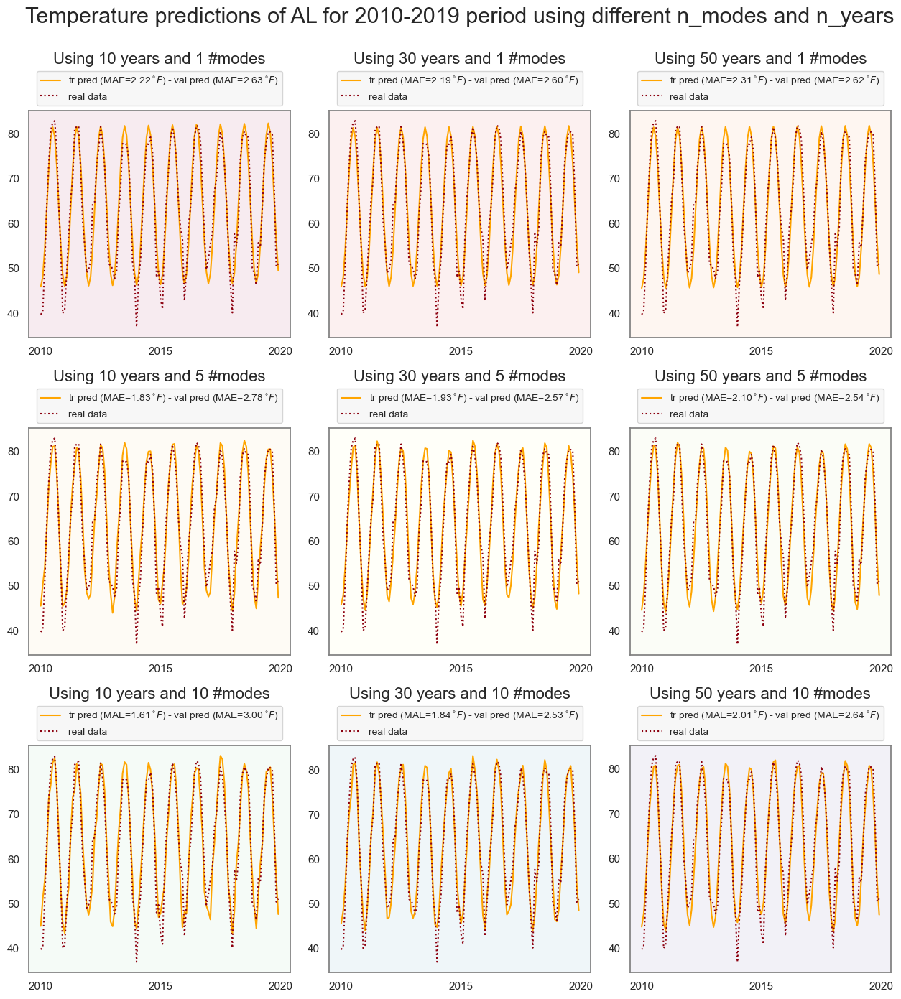
In this specific case (state='AL', n_pred=10, and pred_period=2010-2019), trainig the model using data from past 30 years and n_modes=10 gives the lowest Mean Absolute Error (MAE) for validation data. Notice that regardless of the number of modes and years, the highest errors in predictions occur in Winter.
fig, ax = plt.subplots(1,1,figsize=(12,12),dpi=100)
sns.set(rc={'figure.facecolor':"whitesmoke"})
ax.grid(False)
n_modes = 10
n_years_tr = 30
ts_data_tr = temp_data.iloc[-n_years*12-n_pred : -n_pred, :]
ts_data_val = temp_data.iloc[-n_pred:, :]
ts_pred = model_full(ts_data_tr, n_dominant_modes=n_modes, n_pred=n_pred)
ts_pred_val = ts_pred[-n_pred:]
# Boxplot
residual_data = ts_data_val - ts_pred_val
residual_data.index.set_names(['year','month'], inplace=True)
residual_data.reset_index(inplace=True)
residual_data.columns = ['year', 'month', 'error']
season_groupby = month_to_season_arr[residual_data.month]
groupby_ = [residual_data.year, season_groupby]
seasonal_residual = residual_data.groupby(groupby_).mean().drop(columns='month')
seasonal_residual.reset_index(inplace=True)
seasonal_residual.columns = ['year', 'season', 'error']
seasonal_residual['error'] = seasonal_residual['error'].apply(lambda x: abs(x))
g = sns.boxplot(x="season", y="error",width=0.8,
palette="pastel", data=seasonal_residual,
ax=ax, order=['Spring', 'Summer', 'Fall', 'Winter'], showmeans=True)
g.set_xlabel('season', fontsize=14)
g.set_ylabel('MAE', fontsize=14)
plt.suptitle(f'MAE of temperature predictions in {state} from 2010-2019 grouped by season', fontsize=18, y=0.92);
plt.show()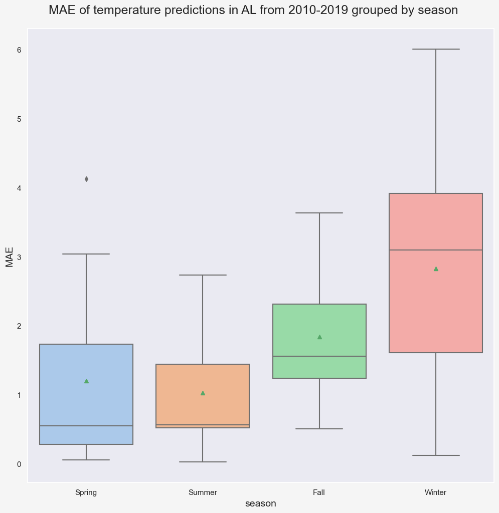
We can perform a more comprehensive search by expanding the search space. The following code snippets finds the 5 most accurate predictions of validation data for different combinations of n_mode and n_year.
state = 'AL'
state_df = climate_df[climate_df['state']==state]
state_df.set_index('timestamp', inplace=True)
temp_data = state_df.groupby([(state_df.index.year),(state_df.index.month)]).mean()
num_modes = [1, 2, 5, 10, 20, 50, 100]
num_years_tr = [1, 2, 5, 10, 20, 30, 40, 50, 60, 70]
n_pred = 12 * 10 # 10 years (2010-2019)
t_range = np.arange(0, len(temp_data)).reshape(-1,1)
results = []
for i, n_modes in enumerate(num_modes):
for j, n_years in enumerate(num_years_tr):
ts_data_tr = temp_data.iloc[-n_years*12-n_pred : -n_pred, :]
ts_data_val = temp_data.iloc[-n_pred:, :]
ts_pred = model_full(ts_data_tr, n_dominant_modes=n_modes, n_pred=n_pred)
ts_pred_tr = ts_pred[:-n_pred]
ts_pred_val = ts_pred[-n_pred:]
mae_tr = np.abs(ts_data_tr - ts_pred_tr).values.mean()
mae_val = np.abs(ts_data_val - ts_pred_val).values.mean()
results.append([state, n_modes, n_years, mae_tr, mae_val, mae_val-mae_tr])
result_df = pd.DataFrame(data=results,
columns = ['state', 'num_modes', 'num_years_tr', 'mae_tr', 'mae_val', 'tr_val_diff'])
result_df.sort_values('mae_val', ascending=True).head()| state | num_modes | num_years_tr | mae_tr | mae_val | tr_val_diff | |
|---|---|---|---|---|---|---|
| 35 | AL | 10 | 30 | 1.835 | 2.526 | 0.691 |
| 27 | AL | 5 | 50 | 2.101 | 2.538 | 0.437 |
| 15 | AL | 2 | 30 | 2.064 | 2.569 | 0.506 |
| 13 | AL | 2 | 10 | 2.022 | 2.571 | 0.549 |
| 25 | AL | 5 | 30 | 1.935 | 2.571 | 0.637 |
Repeating this for all states reveals more insights about how the optimal n_modes and num_years_tr evovle spatially, considering the location of each state.
states_results = []
for state in climate_df.state.unique():
state_df = climate_df[climate_df['state']==state]
state_df.set_index('timestamp', inplace=True)
temp_data = state_df.groupby([(state_df.index.year),(state_df.index.month)]).mean()
mean_temp = temp_data.values.mean()
std_temp = temp_data.values.std()
num_modes = [2, 10, 50, 100]
num_years_tr = [2, 10, 50, 100]
n_pred = 12 * 10 # 10 years (2010-2019)
t_range = np.arange(0, len(temp_data)).reshape(-1,1)
results = []
for i, n_modes in enumerate(num_modes):
for j, n_years in enumerate(num_years_tr):
ts_data_tr = temp_data.iloc[-n_years*12-n_pred : -n_pred, :]
ts_data_val = temp_data.iloc[-n_pred:, :]
ts_pred = model_full(ts_data_tr, n_dominant_modes=n_modes, n_pred=n_pred)
ts_pred_tr = ts_pred[:-n_pred]
ts_pred_val = ts_pred[-n_pred:]
mae_tr = np.abs(ts_data_tr - ts_pred_tr).values.mean()
mae_val = np.abs(ts_data_val - ts_pred_val).values.mean()
results.append([state, mean_temp, std_temp, n_modes, n_years, mae_tr, mae_val, mae_val-mae_tr])
state_best = pd.DataFrame(data=results,
columns=['state',
'mean_temp',
'std_temp',
'num_modes',
'num_years_tr',
'mae_tr',
'mae_val',
'tr_val_diff']
).sort_values('mae_val', ascending=True) \
.iloc[0,:] \
.values
states_results.append(state_best)
all_states_df = pd.DataFrame(data=states_results,
columns=['state',
'mean_temp',
'std_temp',
'num_modes',
'num_years_tr',
'mae_tr',
'mae_val',
'tr_val_diff'])
all_states_df.sort_values('mae_val', ascending=True)| state | mean_temp | std_temp | num_modes | num_years_tr | mae_tr | mae_val | tr_val_diff | |
|---|---|---|---|---|---|---|---|---|
| 3 | CA | 56.557 | 10.489 | 2 | 10 | 1.673 | 1.844 | 0.170 |
| 28 | NM | 53.030 | 14.197 | 2 | 50 | 1.830 | 1.922 | 0.093 |
| 7 | FL | 69.841 | 9.350 | 2 | 50 | 1.701 | 1.966 | 0.265 |
| 1 | AZ | 61.063 | 13.646 | 10 | 50 | 1.702 | 1.968 | 0.266 |
| 34 | OR | 47.886 | 11.160 | 2 | 50 | 1.945 | 2.046 | 0.100 |
| 40 | TX | 64.836 | 13.604 | 2 | 50 | 1.985 | 2.091 | 0.105 |
| 44 | WA | 47.220 | 11.794 | 2 | 50 | 1.970 | 2.100 | 0.131 |
| 4 | CO | 44.107 | 15.250 | 2 | 50 | 2.141 | 2.113 | -0.028 |
| 9 | ID | 43.753 | 15.316 | 2 | 50 | 2.413 | 2.221 | -0.192 |
| 25 | NV | 49.748 | 14.494 | 2 | 50 | 2.366 | 2.256 | -0.109 |
| 41 | UT | 46.122 | 15.840 | 10 | 50 | 2.152 | 2.261 | 0.109 |
| 36 | RI | 49.258 | 15.440 | 2 | 50 | 1.991 | 2.279 | 0.288 |
| 18 | MA | 47.837 | 15.907 | 2 | 50 | 2.032 | 2.334 | 0.302 |
| 15 | LA | 66.474 | 12.192 | 2 | 50 | 1.995 | 2.374 | 0.379 |
| 37 | SC | 62.467 | 13.241 | 10 | 50 | 1.954 | 2.375 | 0.421 |
| 30 | NC | 58.295 | 13.702 | 2 | 50 | 2.103 | 2.385 | 0.282 |
| 6 | DE | 54.343 | 15.492 | 2 | 50 | 2.203 | 2.398 | 0.195 |
| 27 | NJ | 51.821 | 15.973 | 2 | 50 | 2.190 | 2.400 | 0.210 |
| 8 | GA | 63.140 | 12.783 | 10 | 50 | 1.941 | 2.401 | 0.460 |
| 5 | CT | 48.435 | 16.238 | 2 | 50 | 2.118 | 2.414 | 0.296 |
| 43 | VA | 55.455 | 14.695 | 2 | 50 | 2.196 | 2.435 | 0.239 |
| 17 | MD | 54.282 | 15.572 | 2 | 50 | 2.213 | 2.448 | 0.235 |
| 16 | ME | 41.982 | 17.778 | 2 | 100 | 2.314 | 2.476 | 0.162 |
| 33 | OK | 60.098 | 16.163 | 2 | 50 | 2.420 | 2.481 | 0.061 |
| 47 | WY | 41.577 | 16.629 | 2 | 50 | 2.591 | 2.503 | -0.088 |
| 26 | NH | 43.491 | 17.483 | 2 | 50 | 2.251 | 2.525 | 0.274 |
| 2 | AR | 60.507 | 14.903 | 10 | 50 | 2.176 | 2.529 | 0.352 |
| 35 | PA | 48.654 | 16.396 | 2 | 50 | 2.437 | 2.541 | 0.104 |
| 21 | MS | 63.649 | 13.313 | 2 | 10 | 2.013 | 2.542 | 0.529 |
| 0 | AL | 62.978 | 13.134 | 2 | 10 | 2.022 | 2.571 | 0.549 |
| 29 | NY | 46.209 | 17.187 | 2 | 50 | 2.435 | 2.617 | 0.182 |
| 13 | KS | 54.350 | 17.846 | 10 | 50 | 2.490 | 2.667 | 0.178 |
| 45 | WV | 52.068 | 15.330 | 2 | 50 | 2.487 | 2.668 | 0.181 |
| 39 | TN | 57.676 | 14.673 | 2 | 50 | 2.387 | 2.681 | 0.294 |
| 48 | AK | 31.575 | 14.669 | 2 | 50 | 2.606 | 2.687 | 0.081 |
| 19 | MI | 44.306 | 17.983 | 2 | 10 | 2.553 | 2.714 | 0.160 |
| 42 | VT | 41.730 | 18.296 | 2 | 100 | 2.564 | 2.751 | 0.187 |
| 14 | KY | 55.511 | 15.648 | 2 | 50 | 2.572 | 2.758 | 0.185 |
| 24 | NE | 49.044 | 18.763 | 10 | 50 | 2.697 | 2.796 | 0.098 |
| 32 | OH | 50.627 | 16.801 | 2 | 50 | 2.684 | 2.816 | 0.132 |
| 23 | MT | 41.260 | 17.082 | 2 | 10 | 2.812 | 2.849 | 0.038 |
| 22 | MO | 54.523 | 17.257 | 2 | 50 | 2.690 | 2.869 | 0.178 |
| 11 | IN | 51.603 | 17.279 | 2 | 50 | 2.752 | 2.954 | 0.202 |
| 10 | IL | 52.155 | 17.867 | 2 | 100 | 2.870 | 3.012 | 0.142 |
| 46 | WI | 43.142 | 19.865 | 2 | 10 | 2.910 | 3.136 | 0.226 |
| 12 | IA | 47.692 | 19.860 | 2 | 100 | 3.181 | 3.272 | 0.091 |
| 38 | SD | 44.704 | 20.619 | 2 | 100 | 3.500 | 3.322 | -0.178 |
| 20 | MN | 41.726 | 21.786 | 2 | 100 | 3.402 | 3.373 | -0.029 |
| 31 | ND | 39.782 | 22.189 | 2 | 10 | 3.510 | 3.412 | -0.098 |
sns.set(rc={'axes.facecolor':'whitesmoke', 'figure.facecolor':'lightgray',
'grid.color':'gainsboro', 'grid.linestyle':':'})
fig, ax = plt.subplots(1, 1, figsize=(4, 4), dpi=100)
sns.despine(left=False)
max_count = all_states_df[['num_modes', 'num_years_tr']].value_counts().max()
for i,n_modes in enumerate(num_modes):
for j,n_years in enumerate(num_years_tr):
count = len(all_states_df[
(all_states_df['num_modes']==n_modes)
&
(all_states_df['num_years_tr']==n_years)
])
ax.scatter(i+1, j+1, s=count*10, c='r', alpha=count/max_count);
plt.xlabel('n_modes')
plt.ylabel('n_years')
ax.set_xticks(np.arange(1,len(num_modes)+1))
ax.set_yticks(np.arange(1,len(num_years_tr)+1))
ax.set_xticklabels(num_modes)
ax.set_yticklabels(num_years_tr)
plt.show()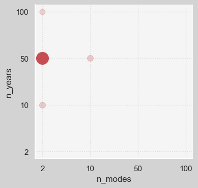
Figure shows that in most cases, (n_modes=2, n_years=50) pair gives the most accurate result. A correlation plot might reveal more interesting details regarding the potential relationships among the variables.
fig, ax = plt.subplots(1, 1, figsize=(14,14))
corr = all_states_df.corr()
g = sns.heatmap(
corr,
vmin=-1, vmax=1, center=0,
cmap='Spectral',
square=True,
ax=ax,
cbar_kws={'shrink': 0.8}
)
plt.setp(ax.get_xticklabels(), rotation=45, horizontalalignment='right')
ax.set_title('Correlation Matrix', fontsize=18, y=1.05)
ax.xaxis.tick_top();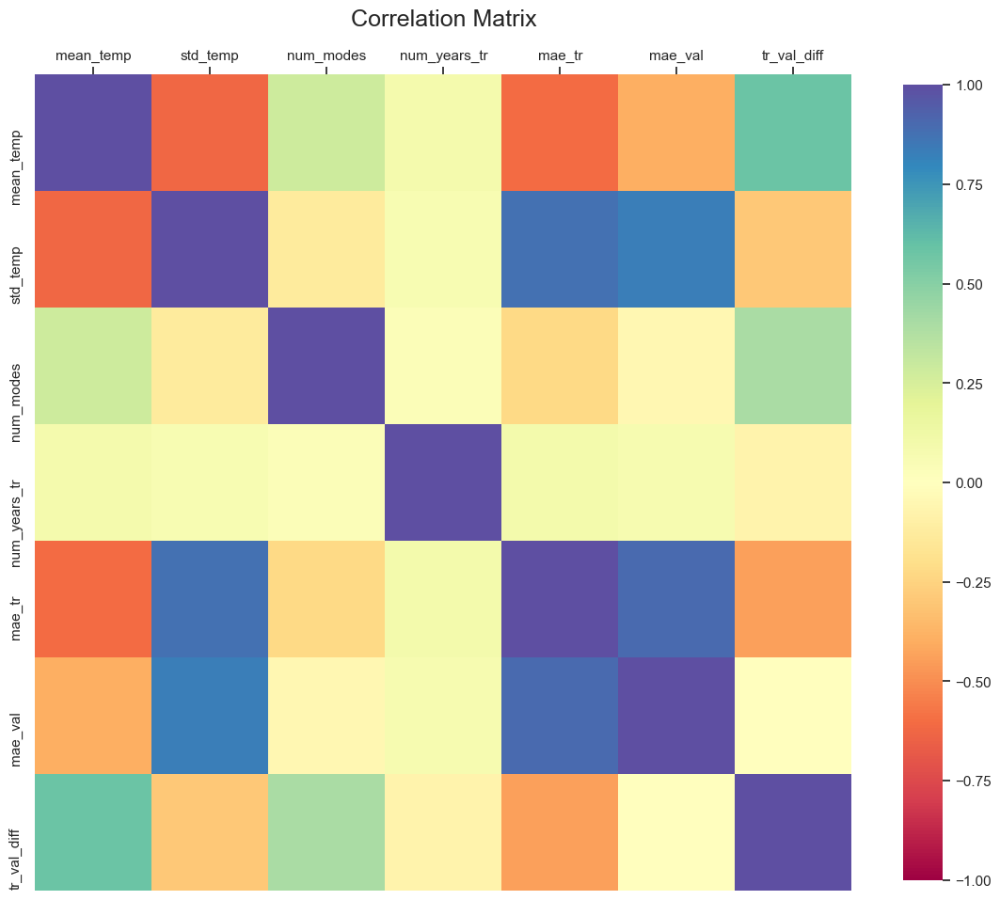